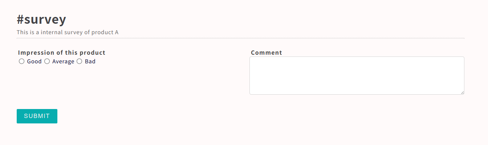
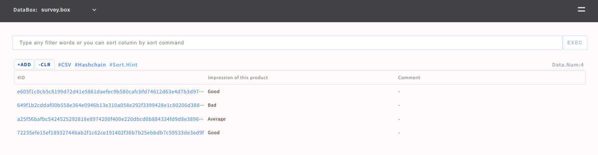
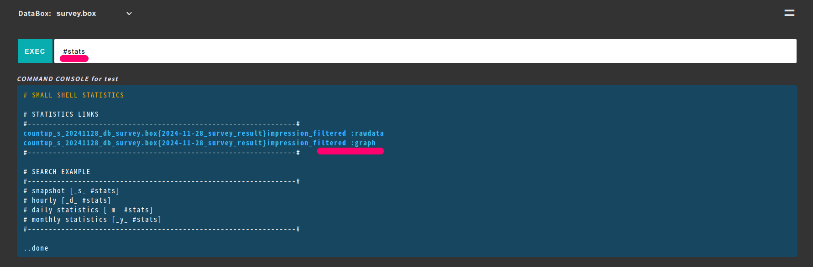

Create Form
You can create dedicated design Form very easily.
sudo /usr/local/small-shell/adm/gen -app
Type of APP (1.BASE | 2.FORM | 3.SCRATCH): 2
# Dialog will be started, You could define keys which could insert form in the dialog
Seceinario
This is an example of creating survey form and analyzing result.
- Create DataBox for survey
- Create survey form for end user
- Analyze survey result with graph
Required
Please setup Base APP beorehand refering to Base APP
Create DataBox
sudo /usr/local/small-shell/adm/gen -databox
databox_name: survey.box
Note
In this case no specific parameter could not be primary key, so it's better to use hashid as primary key. please just input hashid in the dialog as primary key name. then hash id will be generated by system itself.
Result of dialog
#primary_key
name="hashid"
label="hashid"
type="text"
option="required"
#column2
name="generation"
label="Generation"
type="radio"
params="young middle senior"
option=""
#column3
name="impression"
label="Impression of this product"
type="radio"
params="Good Average Bad"
option="required"
#column4
name="comment"
label="Comment"
type="textarea"
option=""
Generate Form
Then let's create survey Form for end users
sudo /usr/local/small-shell/adm/gen -app
Type of APP (1.BASE | 2.FORM | 3.SCRATCH): 2
form_name: survey
result of dialog. comment_check and note will be excluded for end user FORM.
FORM will be generated by following order, please check it
-----------------------------------------------------------------
APP type: 2.FORM
Form name: survey
target_databox: survey.box
description: This is a internal survey of product A
IP_whitelisting: no
Included keys: generation,impression,comment
Access URL: https://ec2-XX-XX-XX-XX.us-west-2.compute.XXXX.com/cgi-bin/survey
-----------------------------------------------------------------
Submit survey using generated FORM
Access to survey Form 
Check databox via Base APP
Data will be pushed to the databox through the survey form. admin can check survey results thorough Base APP. then you can analyze result on table view or console box.

Make snapshot graph
You can viruslize survey results to the graph.
Note
please setup pyshell env beforehand, see detail at pyshell
example executed on Apr 3rd 2022 as snapshot.
sudo -u small-shell /usr/local/small-shell/util/scripts/countup.sh databox:survey.box \
key:impression filters:Good,Average,Bad type:pie title:2022-04-03_survey_result frequency:snapshot
please input #stats to console box on Base APP.
Base APP > Console Box [#stats]


Change Form view
You can modify html descriptor directly.
sudo vi /var/www/descriptor/${Form}_get_new.html.def
e.g.) sudo vi /var/www/descriptor/survey_get_new.html.def
--code--
<html>
<head>
<meta charset="UTF-8" />
<title>survey.new</title>
<meta name="viewport" content="width=device-width,initial-scale=1.0,minimum-scale=1.0,maximum-scale=1.0,user-scalable=no">
<link rel="stylesheet" href="./survey_css">
</head>
<body>
<div class="container">
<div class="form-box">
<div class="description">
<h1>#survey</h1>
<p>This is a internal survey of product A</p>
<hr>
<br>
</div>
<form method="post" action="./survey?req=set&id=%%id">
<ul>
%%dataset
</ul>
<button class="button" type="submit">SUBMIT</button>
</form>
</div>
</div>
</body>
</html>
-------
Change row size for textarea
You can change row size by inserting code to ${Form}_new.html.def and ${Form}_get.html.def
e.g)
sudo vi /var/www/descriptor/survey_new.html.def
--code--
<script>
document.getElementById("txtara").rows="10"
</script>
--------